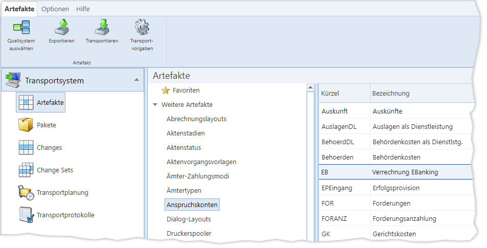

xml-Dateien für die
Mehrheit der Artefakte (z. B. Vorgangsvorlagen, Custom-Code-Skripte,
Vertragskonditionen, „MS Reporting Services“-Reports)
xml-Dateien für die
Mehrheit der Artefakte (z. B. Vorgangsvorlagen, Custom-Code-Skripte,
Vertragskonditionen, „MS Reporting Services“-Reports)
Abb. 25: Der Menüpunkt „Artefakte“
Zusammenhänge
Beim Transport von Artefakten von einem Quellsystem in das TRMS und von dort in ein Zielsystem werden die Daten nicht direkt von Datenbank zu Datenbank kopiert. Stattdessen werden die Artefakte immer in Dateiform übertragen; typischerweise verpackt in eine trms4-Paketdatei.
Im Menüpunkt „Artefakte“ können Sie sich diese Dateien für einzelne Artefakte herunterladen.
Die Dateien könnten Sie beispielsweise in einem externen Versions-Management-System einchecken und historisieren.
Zudem können Sie die Dateien in Changes und Change Sets dazu nutzen, um gezielt Artefakte in bereits gespeicherten Paketdateien auszutauschen, ohne andere Artefakte in der Paketdatei zu beeinflussen.
Typen von Artefakt-Dateien
Je nach Artefakt-Typ sind die Dateitypen für Artefakte unterschiedlich:
xml-Dateien für die
Mehrheit der Artefakte (z. B. Vorgangsvorlagen, Custom-Code-Skripte,
Vertragskonditionen, „MS Reporting Services“-Reports)
sql-Dateien für
Datenbankobjekte
wfu4-Dateien für
Workflow-Update-Pakete. Sowohl ganze, in IKAROS erstellte
Workflow-Aktualisierungs-Pakete als auch einzeln im TRMS ausgewählte
Workflow-Artefakte sind in wfu4-Dateien verpackt.
Artefakte des Typs „Datenbankskripte“ können in diesem Menüpunkt nicht exportiert bzw. transportiert werden.
Artefakt-Dateienpaar
Beim Export eines einzelnen Artefakts müssen Sie immer zwei Dateien herunterladen:
Die Datei mit dem Artefakt selbst. Dies
ist je nach Typ des Artefakts eine „.xml“, eine „.sql“ oder eine
„.wfu4“-Datei.
Die XML-Datei mit den Transportvorgaben
und einigen Metainformationen zum Artefakt, die genauso heißt wie die
Artefaktdatei, mit angehängtem „-Content.xml“.
Wichtig: Diese beiden Dateien müssen Sie immer zusammenhalten!
Zum späteren Transport des Artefakts
oder beim Einsetzen in schon vorhandene Paketdateien sind immer beide Dateien
erforderlich.
Sowohl in der „Content“-Datei als auch
in Paketdateien ist der ursprüngliche Dateiname der Artefaktdatei, wie sie vom
TRMS beim Download benannt wurde, fest eingetragen. Sie dürfen daher den Dateinamen in
Windows nicht verändern! Andernfalls erhalten Sie folgende
Fehlermeldung beim Transportversuch:
TRMS
Die Datei, welche in der Content-Datei angegeben ist, passt nicht zu der hochgeladenen Artefakt-Datei.
[OK]
Auch das Einsetzen von Artefakt-Dateien in bereits gespeicherte Paketdateien in Changes/Change Sets ist nicht mehr möglich, wenn die Dateinamen geändert wurden.
Bedienung des Menüpunkts „Artefakte“
„Transportieren“: Vorhandenes Artefakt-Dateienpaar transportieren
Sie können einerseits die Schaltfläche „Transportieren“ betätigen, um ein zuvor exportiertes Artefakt hochzuladen und in ein Zielsystem zu transportieren. Dabei erscheinen nacheinander zwei Datei-Hochlade-Dialoge:
Im ersten müssen Sie
die Datei mit dem Artefakt selbst angeben und hochladen (je nach Typ des
Artefakts eine „.xml“, eine „.sql“ oder eine „.wfu4“-Datei).
Im zweiten müssen Sie
die zum Artefakt gehörige „-Content.xml“-Datei angeben und hochladen.
Nach dem Hochladen der Dateien erscheint ein Dialog, in dem Sie das Zielsystem auswählen und die Anmeldeoptionen festlegen müssen. Nach Klick auf „Transportieren“ beginnt der Transport.
Das Protokoll zum Transport finden Sie wie gewohnt im Menüpunkt „Transportprotokolle“.
Hinweise
Es ist nicht möglich, ein Artefakt aus
den Listen sofort zu transportieren. Sie müssen für den Transport immer ein
bereits exportiertes Artefakt-Dateipaar hochladen.
Im Anwendungsfall „Transportieren“ haben
alle anderen Schaltflächen und Listen des Menüpunkts „Artefakte“ keine
Bewandtnis.
„Exportieren“: Artefakt-Dateipaare exportieren
Sie können andererseits nach dem Aufruf des Menüpunkts die Schaltfläche „Quellsystem wählen“ betätigen, um sich an einem IKAROS-System anzumelden. Nach erfolgreicher Anmeldung werden die Listen der Artefakte wie im Artefaktpaket-Assistenten geladen. Anders als im Artefakt-Paketassistenten können Sie jedoch nicht mehrere Artefakte als „ausgewählt“ markieren, sondern die Funktionalität bezieht sich immer auf das aktuell markierte Artefakt.
Um ein Artefakt zu exportieren, müssen Sie es markieren, können bei Bedarf die Transportvorgaben anpassen und dann die Schaltfläche „Exportieren“ betätigen, um den Download des Dateipaares zum Artefakt einzuleiten.
Dabei erhalten Sie je nach Einstellung des Webbrowsers eventuell zwei aufeinander folgende Download-Dialoge, mit denen Sie beide Dateien zum Artefakt speichern müssen:
Je nach Typ des Artefakts eine „.xml“,
eine „.sql“ oder eine „.wfu4“-Datei mit dem jeweiligen Artefakt. Der Dateiname
entspricht dem Artefakt-Schlüssel (je nach Artefakt-Typ ein Kürzel bzw. Name
oder eine GUID).
Die „-Content.xml“-Datei zum
Artefakt.
Wichtig: Sie benötigen immer beide Dateien und Sie dürfen die Dateinamen nicht ändern! Stellen Sie dafür auch sicher, dass der Webbrowser die Dateinamen beim Speichern nicht ändert.
Schaltflächen
|
Symbol |
Schaltfläche |
Beschreibung |
|
|
„Quellsystem auswählen“ [Strg] + [Q] |
Öffnet den Dialog zum Anmelden an demjenigen IKAROS-System, aus dem die Artefakte gewählt werden sollen. |
|
|
„Exportieren“ [Strg] + [Umschalt] + [E] |
Leitet den Download des Dateienpaars für das gewählte Artefakt ein (zwei aufeinanderfolgende Downloads im Webbrowser). Wichtig: Sie müssen beide Dateien speichern und zusammenhalten, wenn Sie das Artefakt später mit der exportierten Datei transportieren bzw. in Pakete einsetzen können möchten. |
|
|
„Transportieren“ [Strg] + [i] |
Ruft zunächst zwei aufeinander folgende Dateiauswahldialoge auf. Im ersten müssen Sie die Datei mit dem Artefakt angeben, im zweiten die dazugehörige „-Content.xml“-Datei mit den Transportvorgaben. Anschließend müssen Sie in einem Dialog ein Zielsystem wählen und den eigentlichen Transportprozess starten. |
|
|
„Hinzufügen“ [Strg] + [Alt] + [A] |
Öffnet einen Dateiauswahldialog, um ein Workflow-Update-Paket hochzuladen. Beachten Sie im Menüpunkt „Artefakte“, dass immer nur ein Workflow-Paket ausgewählt sein kann und jedes weitere „Hinzufügen“ das vorhandene Paket ersetzt. Der Anwendungsfall für das Hinzufügen und erneute Exportieren von Workflow-Update-Paketen im Menüpunkt „Artefakte“ ist es, eine zum Paket passende „-Content.xml“-Datei mit den Transportvorgaben zu generieren. |
|
|
„Transportvorgaben“ [Strg] + [E] |
Öffnet den Dialog für Transportvorgaben [Link] für das ausgewählte Artefakt. Beachten Sie, dass die Einstellungen im Menüpunkt „Artefakte“ nicht zwischengespeichert werden. Wenn Sie ein anderes Artefakt auswählen, gehen die zuvor eingestellten Transportvorgaben verloren. |